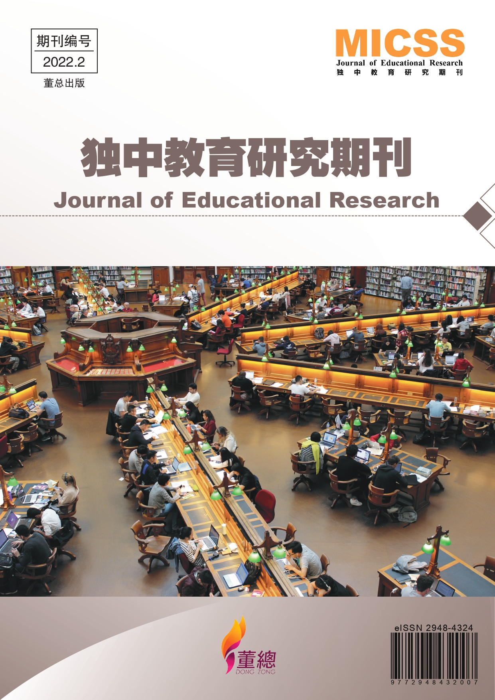

独中教育研究期刊已出版
教育研究是独中教育改革的重要组成部分，从过去“摸着石头过河”到现在“科学系统的教研工作”，对独中教育这一个独特的教育体制扮演着重要的角色。为促进对独中教育的学术研究、提供独中教育的学术交流平台、扩大独中教育学术研究的影响力，以及汇集独中教育的学术研究成果，《独中教育研究期刊》于2022年5月30日创刊，一年发布两期。
最新一期的《独中教育研究期刊》（期刊编号：2022.2）已于2022年11月30日发布，本期一共收集了四篇研究报告，题目如下：
- 《沙巴崇正中学新常态招生模式之分析与反思》 - 林书缘
- 《独中新手教师教学困境与专业成长需求之探究》 - 沈心慈
- 《疫情下之线上班级经营》 - 黄燕娣
- 《线上读书会之进行与成效初探》 - 林卿卿
教上述研究报告作者皆为前线教师或教育工作者。研究报告以实证性研究为主，期待期刊能获得国内外教研者和办学者的支持，贡献文稿以进行学术交流，共同为独中教育的发展思索更好的方案和策略。
